← todos los días · versión interactiva · sinóptico · ‹ 29/09 · 01/10 ›
Informe diario · Miércoles 30/09/2026
Generado el 05/10/2026 10:20
71,62kWh total
0,00BdC en marcha EST=3 (h)
–EER aprox. BdC + dep. 2 (día)
101,33Calor cedido por vitrinas al anillo (kWh térmicos, aprox.)
21,4 / 26,1 / 31,8T ext mín / media / máx (°C)
100,00Datos registrados, peor fichero (%)
Consumo por hora de cada equipo
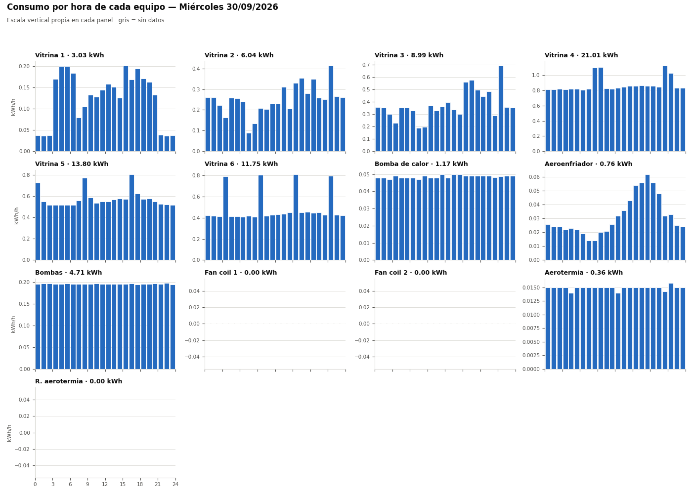
Bomba de calor
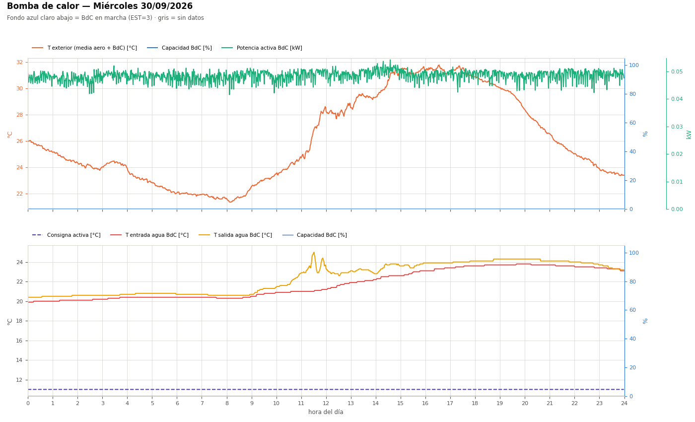
Aeroenfriador
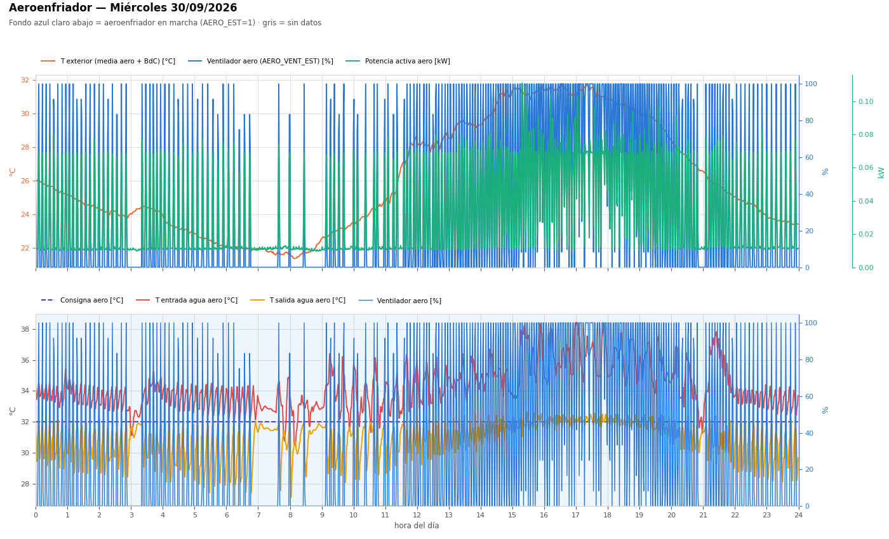
Vitrina 1
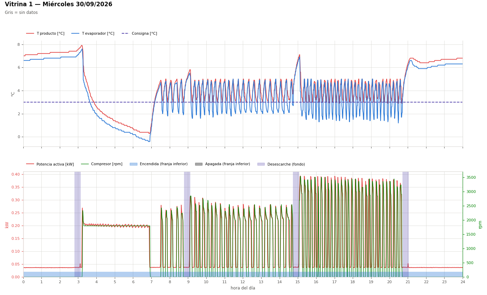
Vitrina 2
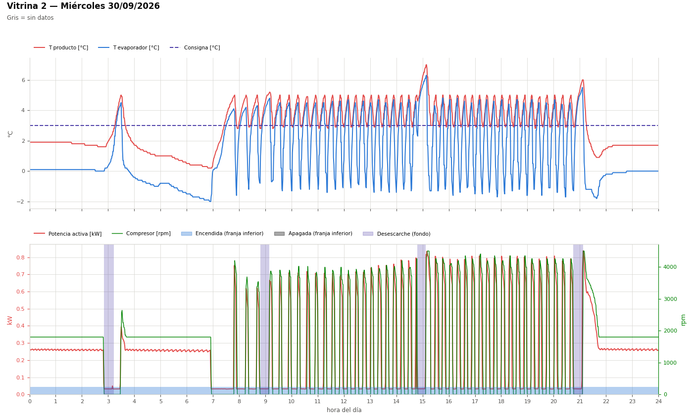
Vitrina 3
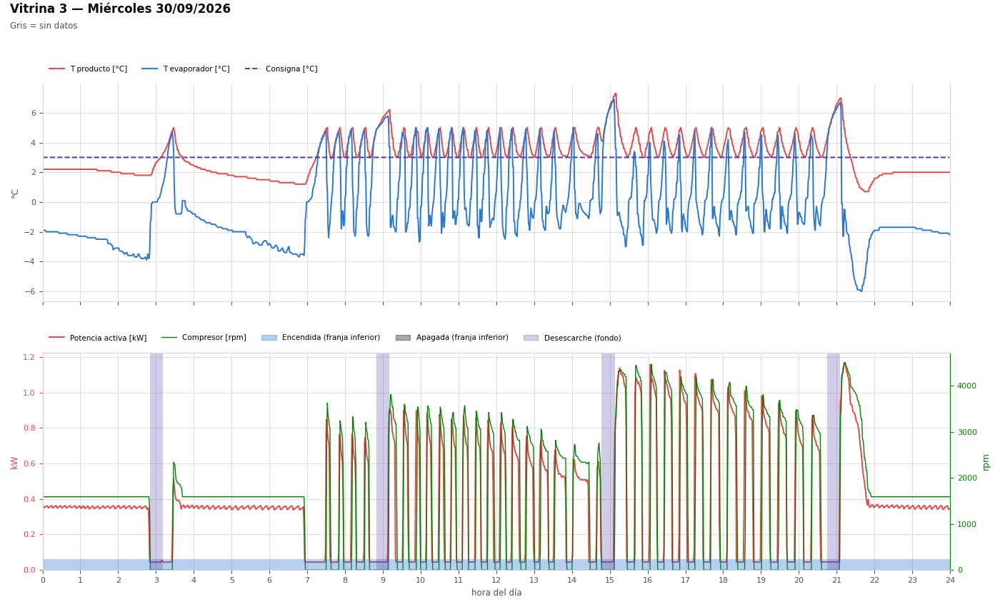
Vitrina 4
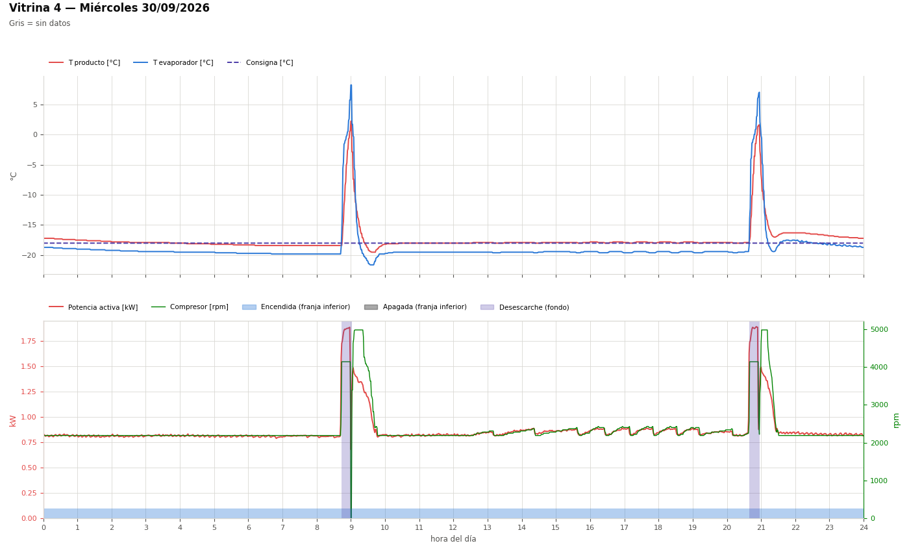
Vitrina 5
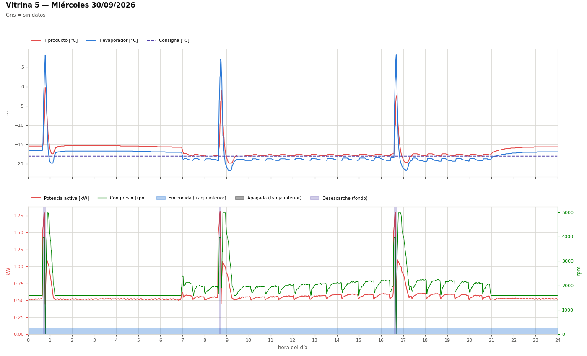
Vitrina 6
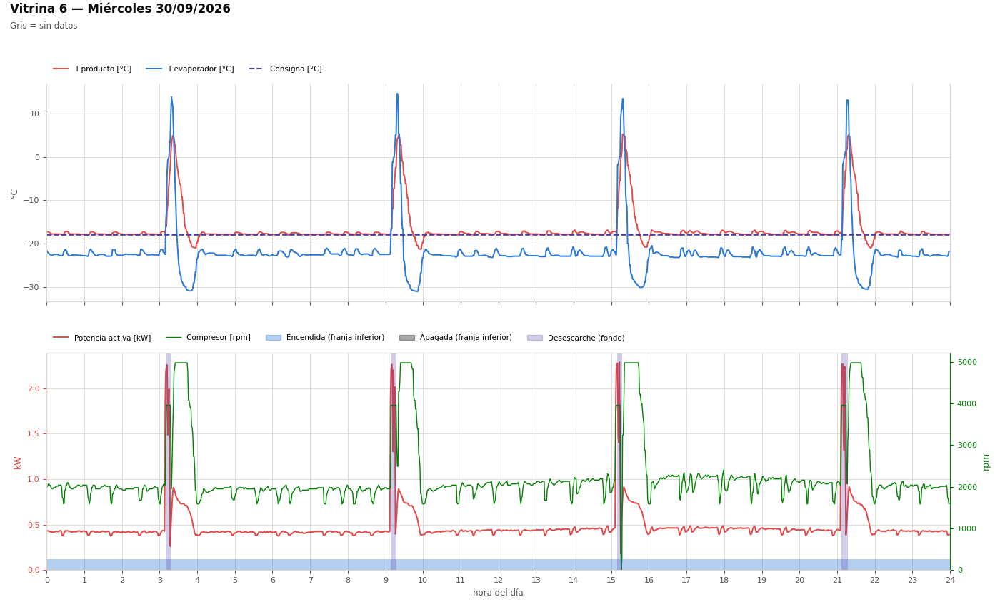
Bomba de calor y aeroenfriador
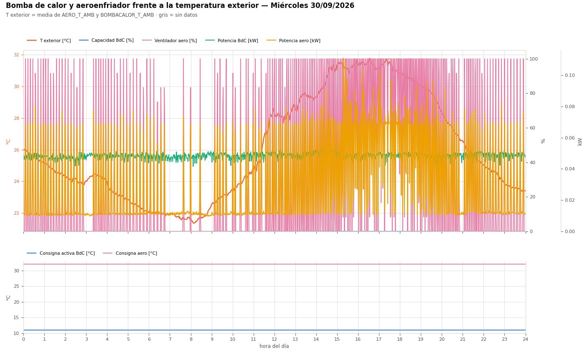
Balance térmico del anillo (aprox.)
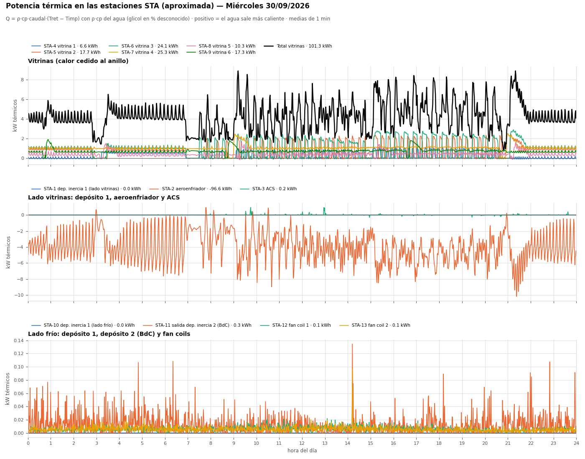
EER aproximado BdC + depósito 2
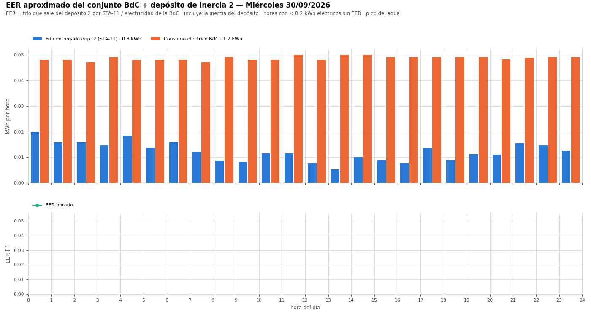
Anillo: temperaturas, caudales, válvulas y presiones
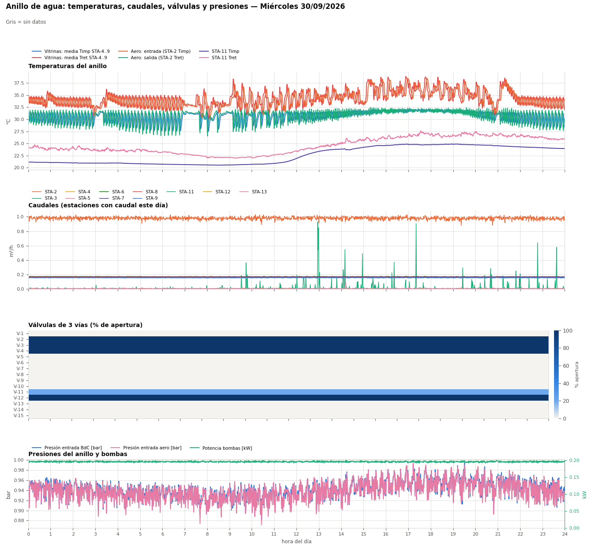
Clima interior y fan coils
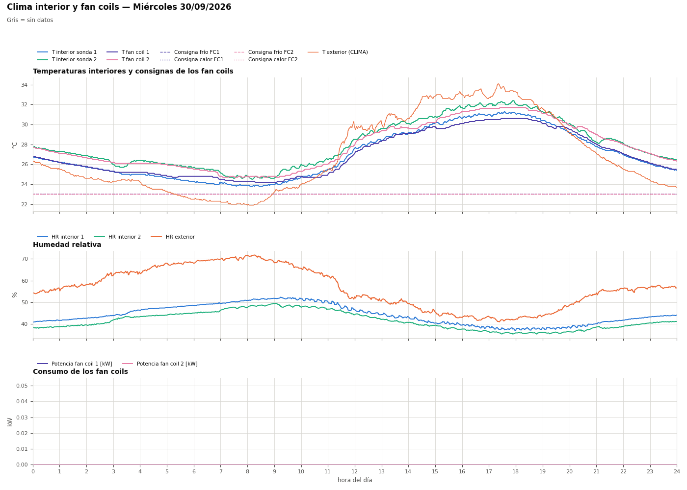
Avisos del día
| Tipo | Equipo | Inicio | Fin | min | Detalle |
|---|---|---|---|---|---|
| Vitrina sobre consigna | Vitrina 1 | 00:00 | 02:48 | 168 | T producto hasta 4.4 K por encima de la consigna (fuera de desescarche) |
| Vitrina sobre consigna | Vitrina 1 | 21:33 | 23:59 | 147 | T producto hasta 3.8 K por encima de la consigna (fuera de desescarche) |
| Presión baja | Anillo (entrada BdC) | 00:00 | 16:08 | 968 | Presión mínima 0.78 bar (< 1.0 bar) |
| Presión baja | Anillo (entrada BdC) | 16:09 | 16:54 | 45 | Presión mínima 0.88 bar (< 1.0 bar) |
| Presión baja | Anillo (entrada BdC) | 16:59 | 17:46 | 47 | Presión mínima 0.79 bar (< 1.0 bar) |
| Presión baja | Anillo (entrada BdC) | 17:49 | 18:20 | 31 | Presión mínima 0.88 bar (< 1.0 bar) |
| Presión baja | Anillo (entrada BdC) | 18:23 | 18:38 | 14 | Presión mínima 0.88 bar (< 1.0 bar) |
| Presión baja | Anillo (entrada BdC) | 18:43 | 19:13 | 30 | Presión mínima 0.89 bar (< 1.0 bar) |
| Presión baja | Anillo (entrada BdC) | 19:14 | 19:31 | 17 | Presión mínima 0.76 bar (< 1.0 bar) |
| Presión baja | Anillo (entrada BdC) | 19:32 | 20:06 | 35 | Presión mínima 0.89 bar (< 1.0 bar) |
| Presión baja | Anillo (entrada BdC) | 20:07 | 23:59 | 233 | Presión mínima 0.76 bar (< 1.0 bar) |
| Presión baja | Anillo (entrada aero) | 00:00 | 16:06 | 967 | Presión mínima 0.71 bar (< 1.0 bar) |
| Presión baja | Anillo (entrada aero) | 16:08 | 16:54 | 46 | Presión mínima 0.88 bar (< 1.0 bar) |
| Presión baja | Anillo (entrada aero) | 16:59 | 17:17 | 18 | Presión mínima 0.87 bar (< 1.0 bar) |
| Presión baja | Anillo (entrada aero) | 17:18 | 17:46 | 29 | Presión mínima 0.77 bar (< 1.0 bar) |
| Presión baja | Anillo (entrada aero) | 17:48 | 18:19 | 31 | Presión mínima 0.85 bar (< 1.0 bar) |
| Presión baja | Anillo (entrada aero) | 18:24 | 18:39 | 16 | Presión mínima 0.88 bar (< 1.0 bar) |
| Presión baja | Anillo (entrada aero) | 18:44 | 19:15 | 32 | Presión mínima 0.85 bar (< 1.0 bar) |
| Presión baja | Anillo (entrada aero) | 19:15 | 19:30 | 14 | Presión mínima 0.71 bar (< 1.0 bar) |
| Presión baja | Anillo (entrada aero) | 19:32 | 20:05 | 33 | Presión mínima 0.88 bar (< 1.0 bar) |
| Presión baja | Anillo (entrada aero) | 20:07 | 23:59 | 232 | Presión mínima 0.77 bar (< 1.0 bar) |
Indicadores del día
| kWh Vitrina 1 | 3,03 |
| kWh Vitrina 2 | 6,04 |
| kWh Vitrina 3 | 8,99 |
| kWh Vitrina 4 | 21,01 |
| kWh Vitrina 5 | 13,80 |
| kWh Vitrina 6 | 11,75 |
| kWh Bomba de calor | 1,17 |
| kWh Aeroenfriador | 0,76 |
| kWh Bombas | 4,71 |
| kWh Fan coil 1 | 0,00 |
| kWh Fan coil 2 | 0,00 |
| kWh Aerotermia | 0,36 |
| kWh R. aerotermia | 0,00 |
| kWh total | 71,62 |
| Calor cedido por vitrinas al anillo (kWh térmicos, aprox.) | 101,33 |
| Calor en aeroenfriador STA-2, Tret−Timp (kWh térmicos, aprox.) | -96,59 |
| Frío entregado dep. 2 STA-11 (kWh térmicos, aprox.) | 0,29 |
| EER aprox. BdC + dep. 2 (día) | – |
| BdC en marcha EST=3 (h) | 0,00 |
| Ventilador aero >0 (h) | 7,47 |
| T ext mín / media / máx (°C) | 21,4 / 26,1 / 31,8 |
| Datos registrados, peor fichero (%) | 100,00 |
Potencia activa = V·I·cosφ (trifásicos: Σ Vfase-neutro·Ifase·cosφ); su integral coincide con los contadores Wh. T exterior = media de AERO_T_AMB y BOMBACALOR_T_AMB. Potencias térmicas con ρ·cp del agua: el anillo lleva glicol en % desconocido, por lo que son aproximadas. El EER usa el frío que sale del depósito de inercia 2 por STA-11, así que incluye la inercia del depósito (no es instantáneo). Gris = sin datos.